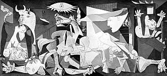

Pablo Picasso
Spanish Painter and SculptorPablo Picasso was a revolutionary Spanish artist, co-founder of the Cubist movement and a defining figure of modern art. His vast and varied body of work reflects innovation, rebellion, and social critique, often breaking traditional artistic boundaries.
Masterwork

Guernica (1937)
Medium: Oil on canvas
Dimensions: 349 cm × 776 cm
Guernica is Picasso’s powerful anti-war mural, created in response to the 1937 bombing of the Basque town during the Spanish Civil War. The painting uses distorted figures, monochrome tones, and dramatic symbolism to depict the chaos, pain, and terror of war. It remains one of the most searing visual indictments of violence in art history.